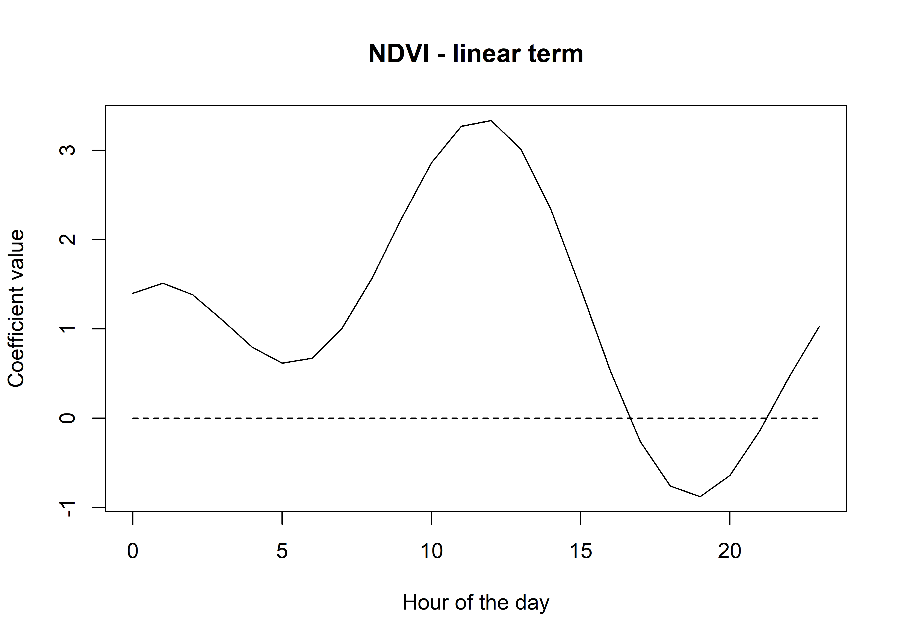

Reconstructing temporally dynamic coefficients and selection surfaces
In this script we will provide some intuition for harmonic regression, and walk through how to reconstruct temporally dynamic coefficients when fitting step selection (or other) models with harmonic terms. We will use the example of a model fitted with two pairs of harmonics. We will then use the coefficients to reconstruct the selection surfaces from models fitted with linear and quadratic terms that were interacted with the harmonics.
Load packages
Harmonics are sine and cosine functions are periodic functions that repeat once per cycle, \(T\). When combined, they can be used to model complex periodic patterns, and with many harmonics can create very flexible functions.
Harmonics can be considered similarly to splines or basis functions in that they are additive - if we add them all together we get a single, flexible function.
Let’s say we have a single pair of harmonics, \(s_1 = \sin(2\pi t / T)\), and \(c_1 = \cos(2\pi t / T)\), where \(t \in T\). For a yearly cycle for instance, \(t\) would be indexed as the day of the year, and \(T = 365\), although \(t\) does not need to be integer-valued, and can be arbitrarily fine. In the case of the model we are fitting here, \(t\) is the hour of the day, for \(T\) is the number of hours in a day, 24.
Code
# create a sequence of hours
t <- seq(0,23,0.1)
T <- 24
# create the harmonic terms
sin1 <- sin(2 * pi * t / T)
cos1 <- cos(2 * pi * t / T)
# plot the harmonic terms
plot(t, sin1, type = "l", col = "red",
xlab = "Hour of the day", ylab = "Value",
main = "Harmonic terms", ylim = c(-2.5,2.5))
lines(t, cos1, col = "blue")
lines(t, rep(0,length(t)), lty = "dashed")Now what we can do is add them together to create a single function.
Code
It looks similar, although now the amplitude is greater (up to about 1.4 now), and that the peak has shifted to be an average of the sine and cosine functions (peak is now at 3 ( = 0 + 6 / 2). We can shift the location of the peak by giving one of the terms more influence.
Code
If we give more weight to the sine function, the peak will shift to the right, which is closer to the peak of the sine function, and vice versa. We can see it has also changed the amplitude, which now peaks above y = 2.
We can also add a constant term, which will just shift the entire function up or down.
Code
We can see that adding a constant, and by weighting the sin and cosine terms we can start to create a flexible function. If we only use 1 pair of harmonics we can only have one period, but if we use more pairs we can have more periods, and therefore more flexibility. Let’s add some more pairs of harmonics.
Code
# create two more harmonic terms
sin2 <- sin(4 * pi * t / T)
cos2 <- cos(4 * pi * t / T)
# plot the harmonic terms
plot(t, sin2, type = "l", col = "red",
xlab = "Hour of the day", ylab = "Value",
main = "Harmonic terms", ylim = c(-2.5,2.5))
lines(t, cos2, col = "blue")
lines(t, rep(0,length(t)), lty = "dashed")Again we can add these together, and weight to shift the peak and change the amplitude.
Code
Now we can start to add all of our components together to create flexible functions (and there is really no limit to this - infinitely flexible functions can be created with infinitely many harmonic terms, which is called a Fourier series - for some very cool intuition about Fourier series check out: https://www.youtube.com/watch?v=r6sGWTCMz2k).
Code
If you play around with the weights you can estimate some really funky functions, and the function will just get more flexible the more harmonic terms that you add.
Code
# create more harmonic terms...
sin3 <- sin(6 * pi * t / T)
cos3 <- cos(6 * pi * t / T)
sin4 <- sin(8 * pi * t / T)
cos4 <- cos(8 * pi * t / T)
# create a single function
f_harmonic <- 0.5 + 0.5*sin1 + 1.5*cos1 + 2*sin2 + 1.25*cos2 + 0.25*sin3 + 0.5*cos3 + 0.1*sin4 + 2*cos4
# plot the function
plot(t, f_harmonic, type = "l", col = "black",
xlab = "Hour of the day", ylab = "Value",
main = "Harmonic function")
lines(t, rep(0,length(t)), lty = "dashed")
Hopefully now you have some intuition about what we are doing with the harmonic terms in our step selection function, in that we are estimating the weights of the sine and cosine functions, which are the coefficients from our fitted models. Pretty cool!
Let’s have a look at some real data now, and fit a model with the harmonics.
Buffalo example
Importing buffalo data for model fitting, and creating harmonic terms using the time at the end of the step.
Rows: 1165406 Columns: 22
── Column specification ────────────────────────────────────────────────────────
Delimiter: ","
dbl (18): id, burst_, x1_, x2_, y1_, y2_, sl_, ta_, dt_, hour_t2, step_id_,...
lgl (1): case_
dttm (3): t1_, t2_, t2_rounded
ℹ Use `spec()` to retrieve the full column specification for this data.
ℹ Specify the column types or set `show_col_types = FALSE` to quiet this message.Code
buffalo_data_all <- buffalo_data_all %>%
mutate(t1_ = lubridate::with_tz(buffalo_data_all$t1_, tzone = "Australia/Darwin"),
t2_ = lubridate::with_tz(buffalo_data_all$t2_, tzone = "Australia/Darwin"))
buffalo_data_all <- buffalo_data_all %>%
mutate(id_num = as.numeric(factor(id)),
step_id = step_id_,
x1 = x1_, x2 = x2_,
y1 = y1_, y2 = y2_,
t1 = t1_,
t1_rounded = round_date(buffalo_data_all$t1_, "hour"),
hour_t1 = hour(t1_rounded),
t2 = t2_,
t2_rounded = round_date(buffalo_data_all$t2_, "hour"),
hour_t2 = hour(t2_rounded),
hour = hour_t2,
yday = yday(t1_),
year = year(t1_),
month = month(t1_),
sl = sl_,
log_sl = log(sl_),
ta = ta_,
cos_ta = cos(ta_),
# scale canopy cover from 0 to 1
canopy_01 = canopy_cover/100,
# here we create the harmonic terms for the hour of the day
# for seasonal effects, change hour to day of the year (which is t),
# and 24 to 365 (which is T)
hour_s1 = sin(2*pi*hour/24),
hour_s2 = sin(4*pi*hour/24),
hour_s3 = sin(6*pi*hour/24),
hour_c1 = cos(2*pi*hour/24),
hour_c2 = cos(4*pi*hour/24),
hour_c3 = cos(6*pi*hour/24))
# to just select a single year of data
buffalo_data_all <- buffalo_data_all %>% filter(t1 < "2019-07-25 09:32:42 ACST")
buffalo_ids <- unique(buffalo_data_all$id)Fitting the model with two pairs of harmonics
Creating a data matrix
First we create a data matrix to be provided to the model, and then we scale and centre the full data matrix, with respect to each of the columns. That means that all variables are scaled and centred after the data has been split into wet and dry season data, and also after creating the quadratic and harmonic terms (when using them).
This is where we interact the harmonic terms with our covariates. As we have already created the harmonic terms for the hour of the day (s1, c1, s2, etc), we just interact (multiply) these with each of the covariates, including the quadratic terms and movement parameters. As before, we create the data matrix with all quadratic and harmonic terms, and then scale the matrix by each column, and store the scaling and centering variables to reconstruct the natural scale coefficients (i.e. if we were to fit the model without centering and scaling).
Code
months_wet <- c(1:4, 11:12)
buffalo_ids <- unique(buffalo_data_all$id)
# buffalo_data <- buffalo_data_all %>% filter(month %in% months_wet) # wet season
buffalo_data <- buffalo_data_all %>% filter(!month %in% months_wet) # dry season
buffalo_data_matrix_unscaled <- buffalo_data %>% transmute(
ndvi = ndvi_temporal,
ndvi_s1 = ndvi_temporal * hour_s1,
ndvi_s2 = ndvi_temporal * hour_s2,
ndvi_c1 = ndvi_temporal * hour_c1,
ndvi_c2 = ndvi_temporal * hour_c2,
ndvi_sq = ndvi_temporal ^ 2,
ndvi_sq_s1 = (ndvi_temporal ^ 2) * hour_s1,
ndvi_sq_s2 = (ndvi_temporal ^ 2) * hour_s2,
ndvi_sq_c1 = (ndvi_temporal ^ 2) * hour_c1,
ndvi_sq_c2 = (ndvi_temporal ^ 2) * hour_c2,
canopy = canopy_01,
canopy_s1 = canopy_01 * hour_s1,
canopy_s2 = canopy_01 * hour_s2,
canopy_c1 = canopy_01 * hour_c1,
canopy_c2 = canopy_01 * hour_c2,
canopy_sq = canopy_01 ^ 2,
canopy_sq_s1 = (canopy_01 ^ 2) * hour_s1,
canopy_sq_s2 = (canopy_01 ^ 2) * hour_s2,
canopy_sq_c1 = (canopy_01 ^ 2) * hour_c1,
canopy_sq_c2 = (canopy_01 ^ 2) * hour_c2,
slope = slope,
slope_s1 = slope * hour_s1,
slope_s2 = slope * hour_s2,
slope_c1 = slope * hour_c1,
slope_c2 = slope * hour_c2,
herby = veg_herby,
herby_s1 = veg_herby * hour_s1,
herby_s2 = veg_herby * hour_s2,
herby_c1 = veg_herby * hour_c1,
herby_c2 = veg_herby * hour_c2,
step_l = sl,
step_l_s1 = sl * hour_s1,
step_l_s2 = sl * hour_s2,
step_l_c1 = sl * hour_c1,
step_l_c2 = sl * hour_c2,
log_step_l = log_sl,
log_step_l_s1 = log_sl * hour_s1,
log_step_l_s2 = log_sl * hour_s2,
log_step_l_c1 = log_sl * hour_c1,
log_step_l_c2 = log_sl * hour_c2,
cos_turn_a = cos_ta,
cos_turn_a_s1 = cos_ta * hour_s1,
cos_turn_a_s2 = cos_ta * hour_s2,
cos_turn_a_c1 = cos_ta * hour_c1,
cos_turn_a_c2 = cos_ta * hour_c2)
buffalo_data_matrix_scaled <- scale(buffalo_data_matrix_unscaled)
# store the scaling and centering attribues to recover the natural scale coefficients
mean_vals <- attr(buffalo_data_matrix_scaled, "scaled:center")
sd_vals <- attr(buffalo_data_matrix_scaled, "scaled:scale")
scaling_attributes <- data.frame(variable = names(buffalo_data_matrix_unscaled),
mean = mean_vals, sd = sd_vals)
buffalo_data_scaled_2p <- data.frame(id = buffalo_data$id,
step_id = buffalo_data$step_id,
y = buffalo_data$y,
buffalo_data_matrix_scaled)Formula with two pairs of harmonics
We add in all the terms in the model formula. We can see that we are adding all of these together, which allows us to add them together later to reconstruct the harmonic function.
Code
formula_twostep <- y ~
ndvi +
ndvi_s1 +
ndvi_s2 +
ndvi_c1 +
ndvi_c2 +
ndvi_sq +
ndvi_sq_s1 +
ndvi_sq_s2 +
ndvi_sq_c1 +
ndvi_sq_c2 +
canopy +
canopy_s1 +
canopy_s2 +
canopy_c1 +
canopy_c2 +
canopy_sq +
canopy_sq_s1 +
canopy_sq_s2 +
canopy_sq_c1 +
canopy_sq_c2 +
slope +
slope_s1 +
slope_s2 +
slope_c1 +
slope_c2 +
herby +
herby_s1 +
herby_s2 +
herby_c1 +
herby_c2 +
step_l +
step_l_s1 +
step_l_s2 +
step_l_c1 +
step_l_c2 +
log_step_l +
log_step_l_s1 +
log_step_l_s2 +
log_step_l_c1 +
log_step_l_c2 +
cos_turn_a +
cos_turn_a_s1 +
cos_turn_a_s2 +
cos_turn_a_c1 +
cos_turn_a_c2 +
strata(step_id) +
cluster(id)Fitting the model
As we have already fitted the model, we will load it here, but if the model_fit object file doesn’t exist, it will run the model fitting code. Be careful here that if you change the model formula, you will need to delete or rename the model_fit file to re-run the model fitting code, otherwise it will just load the previous model.
Check the model output
It will output a massive covariance matrix, which can be ignored for our purposes at the moment. We are interested in the coefficients, which are stored in the beta attribute of the model object.
ndvi ndvi_s1 ndvi_s2 ndvi_c1 ndvi_c2
1.161893282 0.714922760 0.113055141 -0.967183016 1.204151199
ndvi_sq ndvi_sq_s1 ndvi_sq_s2 ndvi_sq_c1 ndvi_sq_c2
-1.327782963 -0.428323139 -0.058775862 0.140541269 -0.438886908
canopy canopy_s1 canopy_s2 canopy_c1 canopy_c2
0.243181981 0.169425294 -0.212793698 0.012453094 0.268704849
canopy_sq canopy_sq_s1 canopy_sq_s2 canopy_sq_c1 canopy_sq_c2
-0.330862304 -0.083271931 0.125532678 -0.204852262 -0.169402632
slope slope_s1 slope_s2 slope_c1 slope_c2
-0.182169983 -0.018788407 -0.073605924 -0.073079922 -0.057404958
herby herby_s1 herby_s2 herby_c1 herby_c2
-0.002559875 -0.017446527 0.002161114 0.131812567 -0.035708056
step_l step_l_s1 step_l_s2 step_l_c1 step_l_c2
-0.491817044 -0.123380017 -0.568516944 -0.161718824 -0.272122631
log_step_l log_step_l_s1 log_step_l_s2 log_step_l_c1 log_step_l_c2
0.249093381 -0.121921392 -0.143440949 -0.238005079 0.024836776
cos_turn_a cos_turn_a_s1 cos_turn_a_s2 cos_turn_a_c1 cos_turn_a_c2
-0.005131786 -0.042839003 -0.183409526 -0.059710062 -0.026697570 Create a dataframe of the coefficients with the scaling attributes, and return the coefficients to their natural scale by dividing by the scaling factor (standard deviation).
As we can see, we have a coefficient for each covariate by itself, and then one for each of the harmonics. These are the ‘weights’ that we played around with above, and we reconstruct them in exactly the same way. We also have the coefficients for the quadratic terms and the interactions with the harmonics, which I have denoted as ndvi_sq for instance. We will come back to these when we look at the selection surfaces.
Code
Let’s have a look at herbaceous vegetation as it didn’t have a quadratic term.
Firstly, as above, we need a sequence of values that covers a full period (or the period that we want to construct the function over, which can be more or less than 1 period). The sequence can be arbitrarily finely spaced. The smaller the increment the smoother the function will be for plotting. When simulating data from the temporally dynamic coefficients, however, one would use the increment that relates to the data collection and model fitting (i.e. one hour in this case).
Here we’ll use a finer resolution than above for smoother plotting
Now we can reconstruct the harmonic function using the formula that we put into our model by interacting the harmonic terms with each of the covariates, for a single covariate, let’s say herbaceous vegetation, this would be written down as:
\[ f = \beta_{herby} + \beta_{herby\_s1} \sin\left(\frac{2\pi t}{24}\right) + \beta_{herby\_c1} \cos\left(\frac{2\pi t}{24}\right) + \beta_{herby\_s2} \sin\left(\frac{4\pi t}{24}\right) + \beta_{herby\_c2} \cos\left(\frac{4\pi t}{24}\right) \]
We can precompute the harmonic terms to make it a bit neater (as we did for the design matrix before fitting our model)
Now we just pull out the relevant coefficients (which are scalars (single numbers), like the weights we used above), multiply them by the harmonic terms (which are vectors representing the function through time), and add them together.
Code
herby_harmonic_function <- coefs_clr$value[which(coefs_clr$coefs == "herby")] +
coefs_clr$value[which(coefs_clr$coefs == "herby_s1")] * sin1 +
coefs_clr$value[which(coefs_clr$coefs == "herby_c1")] * cos1 +
coefs_clr$value[which(coefs_clr$coefs == "herby_s2")] * sin2 +
coefs_clr$value[which(coefs_clr$coefs == "herby_c2")] * cos2
# plot the function
plot(t, herby_harmonic_function, type = "l", col = "black",
xlab = "Hour of the day", ylab = "Coefficient value (scaled)",
main = "Herbaceous vegetation")
lines(t, rep(0,length(t)), lty = "dashed")From these we can see that buffalo select for herbaceous vegetation in the early morning and late afternoon, but have a reasonably strong avoidance of it in the middle of the day (and therefore a selection for woody vegetation). This aligns with what we know about buffalo behaviour (and the climate in Northern Australia’s tropical savannas), in that they are likely to be seeking shelter during this time due to high temperatures and sun.
Reconstructing temporally dynamic coefficients using matrix multiplication
Now that we know how the coefficients of the harmonics can be combined to form a temporally dynamic function, we can use a shortcut, which is matrix multiplication.
First we create a matrix of the harmonics, which is just the sin and cos terms for each harmonic, and then we can multiply this by the coefficients to get the function. When we use two pairs of harmonics we will have 5 coefficients for each covariate (linear + 2 sine and 2 cosine), so there will be 5 columns in the matrix.
For matrix multiplication, the number of columns in the first matrix must be equal to the number of rows in the second matrix. The result will then have the same number of rows as the first matrix and the same number of columns as the second matrix.
Or in other words, if we have a 24 x 5 matrix of harmonics and a 5 x 1 matrix of coefficients, we will get a 24 x 1 matrix of the function, which corresponds to our 24 hours of the day.
Code
# we'll return the increments back to 1 hour for this example,
# just so everything is a bit clearer
hour_seq <- seq(0,23,1)
hour_harmonics_matrix <- as.matrix(data.frame("linear_term" = rep(1, length(hour_seq)),
"hour_s1" = sin(2*pi*hour_seq/24),
"hour_s2" = sin(4*pi*hour_seq/24),
"hour_c1" = cos(2*pi*hour_seq/24),
"hour_c2" = cos(4*pi*hour_seq/24)))
# now have a 24 x 5 matrix
head(hour_harmonics_matrix) linear_term hour_s1 hour_s2 hour_c1 hour_c2
[1,] 1 0.0000000 0.0000000 1.0000000 1.00000000000000000000000
[2,] 1 0.2588190 0.5000000 0.9659258 0.86602540378443870761060
[3,] 1 0.5000000 0.8660254 0.8660254 0.50000000000000011102230
[4,] 1 0.7071068 1.0000000 0.7071068 0.00000000000000006123032
[5,] 1 0.8660254 0.8660254 0.5000000 -0.49999999999999977795540
[6,] 1 0.9659258 0.5000000 0.2588190 -0.86602540378443870761060We can now pull out the coefficients for each covariate and multiply by the matrix to get our temporally dynamic function. I’ll do this bit by bit initially.
Starting with the scaled NDVI covariate
Code
Code
[,1]
[1,] 1.1618933
[2,] 0.7149228
[3,] 0.1130551
[4,] -0.9671830
[5,] 1.2041512Code
# now we can multiply the matrix by the coefficients to get the function
ndvi_harmonic_function <- hour_harmonics_matrix %*% ndvi_coefs_matrix
# ndvi_harmonic_function
# plot the function
plot(hour_seq, ndvi_harmonic_function, type = "l", col = "black",
xlab = "Hour of the day", ylab = "Coefficient value",
main = "NDVI - linear term")
lines(hour_seq, rep(0,length(hour_seq)), lty = "dashed")
Now we can just repeat the process for all of the covariates, and put it all into a dataframe.
Code
# back to the finer resolution for smoother plotting
hour <- seq(0,23.9,0.1)
hour_harmonics_matrix <- as.matrix(data.frame("linear_term" = rep(1, length(hour)),
"hour_s1" = sin(2*pi*hour/24),
"hour_s2" = sin(4*pi*hour/24),
"hour_c1" = cos(2*pi*hour/24),
"hour_c2" = cos(4*pi*hour/24)))
harmonics_df_2p <- data.frame(
"hour" = hour,
"ndvi" = hour_harmonics_matrix %*%
matrix(coefs_clr %>% filter(grepl("ndvi", coefs) & !grepl("sq", coefs)) %>% pull(value)),
"ndvi_2" = hour_harmonics_matrix %*%
matrix(coefs_clr %>% filter(grepl("ndvi_sq", coefs)) %>% pull(value)),
"canopy" = hour_harmonics_matrix %*%
matrix(coefs_clr %>% filter(grepl("canopy", coefs) & !grepl("sq", coefs)) %>% pull(value)),
"canopy_2" = hour_harmonics_matrix %*%
matrix(coefs_clr %>% filter(grepl("canopy_sq", coefs)) %>% pull(value)),
"slope" = hour_harmonics_matrix %*%
matrix(coefs_clr %>% filter(grepl("slope", coefs)) %>% pull(value)),
"herby" = hour_harmonics_matrix %*%
matrix(coefs_clr %>% filter(grepl("herby", coefs)) %>% pull(value)),
"sl" = hour_harmonics_matrix %*%
matrix(coefs_clr %>% filter(grepl("step", coefs) & !grepl("log", coefs)) %>% pull(value)),
"log_sl" = hour_harmonics_matrix %*%
matrix(coefs_clr %>% filter(grepl("log_step", coefs)) %>% pull(value)),
"cos_ta" = hour_harmonics_matrix %*%
matrix(coefs_clr %>% filter(grepl("turn_a", coefs)) %>% pull(value))
)
head(harmonics_df_2p)Now we can plot all these together to see the temporal dynamics of the coefficients. Keep in mind that these are the scaled coefficients.
Code
ggplot() +
geom_path(data = harmonics_df_2p_long,
aes(x = hour, y = value, colour = coef)) +
geom_hline(yintercept = 0, linetype = "dashed") +
scale_y_continuous(expression(Time-varying~parameter~values~beta)) +
scale_x_continuous("Hour", breaks = seq(0,24,2)) +
scale_color_discrete("Estimate") +
theme_classic() +
theme(legend.position = "bottom")We can do the same with the natural scale coefficients.
Code
harmonics_nat_df_2p <- data.frame(
"hour" = hour,
"ndvi" = hour_harmonics_matrix %*%
matrix(coefs_clr %>% filter(grepl("ndvi", coefs) & !grepl("sq", coefs)) %>% pull(value_nat)),
"ndvi_2" = hour_harmonics_matrix %*%
matrix(coefs_clr %>% filter(grepl("ndvi_sq", coefs)) %>% pull(value_nat)),
"canopy" = hour_harmonics_matrix %*%
matrix(coefs_clr %>% filter(grepl("canopy", coefs) & !grepl("sq", coefs)) %>% pull(value_nat)),
"canopy_2" = hour_harmonics_matrix %*%
matrix(coefs_clr %>% filter(grepl("canopy_sq", coefs)) %>% pull(value_nat)),
"slope" = hour_harmonics_matrix %*%
matrix(coefs_clr %>% filter(grepl("slope", coefs)) %>% pull(value_nat)),
"herby" = hour_harmonics_matrix %*%
matrix(coefs_clr %>% filter(grepl("herby", coefs)) %>% pull(value_nat)),
"sl" = hour_harmonics_matrix %*%
matrix(coefs_clr %>% filter(grepl("step", coefs) & !grepl("log", coefs)) %>% pull(value_nat)),
"log_sl" = hour_harmonics_matrix %*%
matrix(coefs_clr %>% filter(grepl("log_step", coefs)) %>% pull(value_nat)),
"cos_ta" = hour_harmonics_matrix %*%
matrix(coefs_clr %>% filter(grepl("turn_a", coefs)) %>% pull(value_nat))
)
head(harmonics_nat_df_2p)Plot the natural scale coefficients. These are now on quite different scales as the covariates are on different scales - particularly the previous space use density, which we’ll omit from this plot.
Code
ggplot() +
geom_path(data = harmonics_nat_df_2p_long,
aes(x = hour, y = value, colour = coef)) +
geom_hline(yintercept = 0, linetype = "dashed") +
scale_y_continuous(expression(Time-varying~parameter~values~beta)) +
scale_x_continuous("Hour", breaks = seq(0,24,2)) +
scale_color_discrete("Estimate") +
theme_classic() +
theme(legend.position = "bottom")To update the Gamma and von Mises distribution from the tentative distributions from Fieberg et al. (2021), Appendix C, we just do the calculation at each time point.
Code
tentative_shape <- 0.438167
tentative_scale <- 534.3507
tentative_kappa <- 0.1848126
hour_coefs_nat_df_2p <- harmonics_nat_df_2p %>% mutate(shape = tentative_shape + log_sl,
scale = 1/((1/tentative_scale) - sl),
kappa = tentative_kappa + cos_ta)
# turning into a long data frame
hour_coefs_nat_long_2p <- pivot_longer(hour_coefs_nat_df_2p, cols = !1, names_to = "coef")Plot the updated movement parameters - notice that we’re scaling the scale parameter by 1/1000 to make it more interpretable.
Code
ggplot() +
geom_path(data = hour_coefs_nat_long_2p %>%
filter(coef %in% c("shape", "kappa")),
aes(x = hour, y = value, colour = coef)) +
geom_path(data = hour_coefs_nat_long_2p %>%
filter(coef == "scale"),
aes(x = hour, y = value/1000, colour = coef)) +
geom_hline(yintercept = 0, linetype = "dashed") +
scale_y_continuous("Value of parameter") +
scale_x_continuous("Hour", breaks = seq(0,24,2)) +
scale_color_discrete("Estimate") +
theme_classic() +
theme(legend.position = "right")Checking temporally dynamic movement parameters against observed data
Here we sample from the updated step length distribution (we could also follow the same process for turning angles) to generate a distribution for each hour of the day, and assess how well it matches the observed step lengths.
Code
`summarise()` has grouped output by 'id'. You can override using the `.groups`
argument.Code
# number of samples from the Gamma distribution
n <- 1e5
# create some empty variables to store the results
gamma_dist_list <- vector(mode = "list", length = nrow(hour_coefs_nat_df_2p))
gamma_mean <- c()
gamma_median <- c()
gamma_ratio <- c()
for(hour_no in 1:nrow(hour_coefs_nat_df_2p)) {
# sample from the Gamma distribution
gamma_dist_list[[hour_no]] <- rgamma(n, shape = hour_coefs_nat_df_2p$shape[hour_no],
scale = hour_coefs_nat_df_2p$scale[hour_no])
# summarise
gamma_mean[hour_no] <- mean(gamma_dist_list[[hour_no]])
gamma_median[hour_no] <- median(gamma_dist_list[[hour_no]])
gamma_ratio[hour_no] <- gamma_mean[hour_no] / gamma_median[hour_no]
}
gamma_df_2p <- data.frame(model = "2p",
hour = hour_coefs_nat_df_2p$hour,
mean = gamma_mean,
median = gamma_median,
ratio = gamma_ratio)
mean_sl_2p <- ggplot() +
geom_path(data = movement_summary,
aes(x = hour, y = mean_sl, colour = factor(id))) +
geom_path(data = gamma_df_2p, aes(x = hour, y = mean),
colour = "red", linetype = "dashed") +
scale_x_continuous("Hour", breaks = seq(0,24,2)) +
scale_y_continuous("Mean step length") +
scale_colour_viridis_d("Buffalo") +
ggtitle("Observed and modelled mean step length",
subtitle = "Two pairs of harmonics") +
theme_classic() +
theme(legend.position = "none")
mean_sl_2pCode
median_sl_2p <- ggplot() +
geom_path(data = movement_summary,
aes(x = hour, y = median_sl, colour = factor(id))) +
geom_path(data = gamma_df_2p, aes(x = hour, y = median),
colour = "red", linetype = "dashed") +
scale_x_continuous("Hour", breaks = seq(0,24,2)) +
scale_y_continuous("Median step length") +
scale_colour_viridis_d("Buffalo") +
ggtitle("Observed and modelled median step length",
subtitle = "Two pairs of harmonics") +
theme_classic() +
theme(legend.position = "none")
median_sl_2pCreating selection surfaces
As we have both quadratic and harmonic terms in the model, we can reconstruct a ‘selection surface’ to visualise how the coefficient changes through time.
To illustrate, we have a coefficient for the linear term and a coefficient for the quadratic term for every hour of the day (or for every time point that we used to reconstruct the temporal dynamics, which is 0.1 hour in this case). Using these coefficients, we can plot the the quadratic selection curve at the scale of the environmental variable.
Using the natural scale coefficients of NDVI from the model, let’s take the coefficient from Hour 3 and plot the quadratic curve
Similar to the harmonics, we add the linear and quadratic terms to get the quadratic curve
Code
[1] 7.885768Code
# multiply the coefficient by the values of NDVI
# the coefficient is positive so this will be a positive relationship
ndvi_linear_selection <- ndvi_linear_coef * ndvi_seq
plot(x = ndvi_seq, y = ndvi_linear_selection,
main = "Selection for NDVI - linear term at hour 3",
xlab = "NDVI", ylab = "Estimated selection")
lines(ndvi_seq, rep(0,length(ndvi_seq)), lty = "dashed")Code
[1] -15.4302Code
# multiply the quadratic coefficient by the values of NDVI^2
ndvi_quadratic_selection <- ndvi_quadratic_coef * (ndvi_seq ^ 2)
plot(x = ndvi_seq, y = ndvi_quadratic_selection,
main = "Selection for NDVI - quadratic term at hour 3",
xlab = "NDVI", ylab = "Estimated selection")
lines(ndvi_seq, rep(0,length(ndvi_seq)), lty = "dashed")Code
# and sum them both together
ndvi_sum_selection <- ndvi_linear_selection + ndvi_quadratic_selection
plot(x = ndvi_seq, y = ndvi_sum_selection,
main = "Selection for NDVI - linear and quadratic terms at hour 3",
xlab = "NDVI", ylab = "Estimated selection")
lines(ndvi_seq, rep(0,length(ndvi_seq)), lty = "dashed")We can see that the quadratic curve at Hour 3 shows highest selection for NDVI values slightly above 0.2, and the coefficient is greater than 0 for NDVI values from around 0 to 0.45.
For brevity we won’t plot the linear and quadratic terms separetely, but we can do so if needed.
Now for Hour 12
Code
hour_no <- 12
# we can separate to the linear term
ndvi_linear_selection <- hour_coefs_nat_df_2p$ndvi[which(hour_coefs_nat_df_2p$hour
== hour_no)] * ndvi_seq
# plot(x = ndvi_seq, y = ndvi_linear_selection,
# main = "Selection for NDVI - linear term",
# xlab = "NDVI", ylab = "Estimated selection")
# and the quadratic term
ndvi_quadratic_selection <- (hour_coefs_nat_df_2p$ndvi_2[which(hour_coefs_nat_df_2p$hour
== hour_no)] * (ndvi_seq ^ 2))
# plot(x = ndvi_seq, y = ndvi_quadratic_selection,
# main = "Selection for NDVI - quadratic term",
# xlab = "NDVI", ylab = "Estimated selection")
# and the sum of both
ndvi_sum_selection <- ndvi_linear_selection + ndvi_quadratic_selection
plot(x = ndvi_seq, y = ndvi_sum_selection,
main = "Selection for NDVI - linear and quadratic terms at hour 12",
xlab = "NDVI", ylab = "Estimated selection")
lines(ndvi_seq, rep(0,length(ndvi_seq)), lty = "dashed")Whereas for Hour 12, the coefficient shows highest selection for NDVI values around 0.5, and the coefficient is positive for all NDVI values above 0. The magnitude of selection is also greater than for Hour 3.
We can imagine viewing these plots for every hour of the day, where each hour has a different quadratic curve, but this would be a lot of plots. Another way to look at it is as a 3D surface, where the x-axis is the hour of the day, the y-axis is the NDVI value, and the z-axis (colour) is the coefficient value.
All we have to do is index over every time point and use the linear and quadratic coefficient values to reconstruct the quadratic curves, and then combine those curves into a 3D surface.
We use the same process as above, but now we index across every time point.
In the plotting we’ll add some contours for the 0 line, to show where the coefficient is positive and negative (conditional on all other covariates).
Selection surface for NDVI
Code
ndvi_min <- min(buffalo_data$ndvi_temporal, na.rm = TRUE)
ndvi_max <- max(buffalo_data$ndvi_temporal, na.rm = TRUE)
ndvi_seq <- seq(ndvi_min, ndvi_max, length.out = 75)
# Create empty data frame
ndvi_fresponse_df <- data.frame(matrix(ncol = nrow(hour_coefs_nat_df_2p),
nrow = length(ndvi_seq)))
# index across all time points
for(i in 1:nrow(hour_coefs_nat_df_2p)) {
# Extract the coefficient values for the linear and quadratic terms and
# multiply by the NDVI values
# Assign the vector as a column to the dataframe
ndvi_fresponse_df[,i] <- (hour_coefs_nat_df_2p$ndvi[i] * ndvi_seq) +
(hour_coefs_nat_df_2p$ndvi_2[i] * (ndvi_seq ^ 2))
}
ndvi_fresponse_df <- data.frame(ndvi_seq, ndvi_fresponse_df)
colnames(ndvi_fresponse_df) <- c("ndvi", hour)
ndvi_fresponse_long <- pivot_longer(ndvi_fresponse_df, cols = !1, names_to = "hour")
ndvi_contour_max <- max(ndvi_fresponse_long$value) # 0.7890195
ndvi_contour_min <- min(ndvi_fresponse_long$value) # -0.7945691
ndvi_contour_increment <- (ndvi_contour_max-ndvi_contour_min)/10
ndvi_quad_2p <- ggplot(data = ndvi_fresponse_long, aes(x = as.numeric(hour), y = ndvi)) +
geom_point(aes(colour = value)) + # colour = "white"
geom_contour(aes(z = value),
breaks = seq(ndvi_contour_increment, ndvi_contour_max, ndvi_contour_increment),
colour = "black", linewidth = 0.25, linetype = "dashed") +
geom_contour(aes(z = value),
breaks = seq(-ndvi_contour_increment, ndvi_contour_min, -ndvi_contour_increment),
colour = "red", linewidth = 0.25, linetype = "dashed") +
geom_contour(aes(z = value), breaks = 0, colour = "black", linewidth = 0.5) +
scale_x_continuous("Hour", breaks = seq(0,24,6)) +
scale_y_continuous("NDVI value", breaks = seq(-1, 1, 0.25)) +
scale_colour_viridis_c("Selection") +
# ggtitle("Normalised Difference Vegetation Index (NDVI)") +
theme_classic() +
theme(legend.position = "right")
ndvi_quad_2pWe can now see how the selection for NDVI changes throughout the day. We can clearly see the diurnal pattern of selection for NDVI, where the buffalo are seeking higher values of NDVI (centred on around 0.5) during the middle of the day, indicated by the positive coefficients, and relatively low selection for lower values of NDVI (centred on around 0.2) during the early morning and late afternoon, and negative coefficients for NDVI values above around 0.4, and strong selection against high values of NDVI. The selection against high NDVI values correlates with the movement dynamics, as they are likely moving through more open areas.
Canopy cover
Code
canopy_min <- min(buffalo_data$canopy_01, na.rm = TRUE)
canopy_max <- max(buffalo_data$canopy_01, na.rm = TRUE)
canopy_seq <- seq(canopy_min, canopy_max, length.out = 75)
# Create empty data frame
canopy_fresponse_df <- data.frame(matrix(ncol = nrow(hour_coefs_nat_df_2p),
nrow = length(canopy_seq)))
for(i in 1:nrow(hour_coefs_nat_df_2p)) {
# Assign the vector as a column to the dataframe
canopy_fresponse_df[,i] <- (hour_coefs_nat_df_2p$canopy[i] * canopy_seq) +
(hour_coefs_nat_df_2p$canopy_2[i] * (canopy_seq ^ 2))
}
canopy_fresponse_df <- data.frame(canopy_seq, canopy_fresponse_df)
colnames(canopy_fresponse_df) <- c("canopy", hour)
canopy_fresponse_long <- pivot_longer(canopy_fresponse_df, cols = !1, names_to = "hour")
canopy_contour_min <- min(canopy_fresponse_long$value) # 0
canopy_contour_max <- max(canopy_fresponse_long$value) # 2.181749
canopy_contour_increment <- (canopy_contour_max-canopy_contour_min)/10
canopy_quad_2p <- ggplot(data = canopy_fresponse_long, aes(x = as.numeric(hour), y = canopy)) +
geom_point(aes(colour = value)) +
geom_contour(aes(z = value),
breaks = seq(canopy_contour_increment, canopy_contour_max, canopy_contour_increment),
colour = "black", linewidth = 0.25, linetype = "dashed") +
geom_contour(aes(z = value),
breaks = seq(-canopy_contour_increment, canopy_contour_min, -canopy_contour_increment),
colour = "red", linewidth = 0.25, linetype = "dashed") +
geom_contour(aes(z = value), breaks = 0, colour = "black", linewidth = 0.5) +
scale_x_continuous("Hour", breaks = seq(0,24,6)) +
scale_y_continuous("Canopy cover", breaks = seq(0, 1, 0.25)) +
scale_colour_viridis_c("Selection") +
# ggtitle("Canopy Cover") +
theme_classic() +
theme(legend.position = "right")
canopy_quad_2pThe selection surface for Canopy cover tells a similar story to NDVI, with the buffalo selecting for higher values of canopy cover during the middle of the day, and lower values during the early morning and late afternoon, suggesting that they are seeking more cover during the hotter parts of the day. Overall the values of the coefficient are not as high as for NDVI, and only range between around -1 and +0.5, whereas for NDVI the coefficient ranges from -4 to +4, suggesting that NDVI is more influential.
References
Session info
R version 4.4.1 (2024-06-14 ucrt)
Platform: x86_64-w64-mingw32/x64
Running under: Windows 10 x64 (build 19045)
Matrix products: default
locale:
[1] LC_COLLATE=English_Australia.utf8 LC_CTYPE=English_Australia.utf8
[3] LC_MONETARY=English_Australia.utf8 LC_NUMERIC=C
[5] LC_TIME=English_Australia.utf8
time zone: Australia/Brisbane
tzcode source: internal
attached base packages:
[1] stats graphics grDevices utils datasets methods base
other attached packages:
[1] scales_1.3.0 beepr_2.0 TwoStepCLogit_1.2.5
[4] tictoc_1.2.1 lubridate_1.9.3 forcats_1.0.0
[7] stringr_1.5.1 dplyr_1.1.4 purrr_1.0.2
[10] readr_2.1.5 tidyr_1.3.1 tibble_3.2.1
[13] ggplot2_3.5.1 tidyverse_2.0.0
loaded via a namespace (and not attached):
[1] utf8_1.2.4 generics_0.1.3 stringi_1.8.4 lattice_0.22-6
[5] hms_1.1.3 digest_0.6.37 magrittr_2.0.3 evaluate_1.0.0
[9] grid_4.4.1 timechange_0.3.0 fastmap_1.2.0 jsonlite_1.8.8
[13] Matrix_1.7-0 survival_3.6-4 audio_0.1-11 fansi_1.0.6
[17] viridisLite_0.4.2 isoband_0.2.7 cli_3.6.3 crayon_1.5.3
[21] rlang_1.1.4 bit64_4.0.5 munsell_0.5.1 splines_4.4.1
[25] withr_3.0.1 yaml_2.3.10 parallel_4.4.1 tools_4.4.1
[29] tzdb_0.4.0 colorspace_2.1-1 vctrs_0.6.5 R6_2.5.1
[33] lifecycle_1.0.4 htmlwidgets_1.6.4 bit_4.0.5 vroom_1.6.5
[37] pkgconfig_2.0.3 pillar_1.9.0 gtable_0.3.5 glue_1.7.0
[41] xfun_0.47 tidyselect_1.2.1 knitr_1.48 farver_2.1.2
[45] htmltools_0.5.8.1 labeling_0.4.3 rmarkdown_2.28 compiler_4.4.1